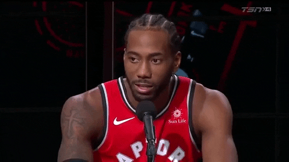

Giannis Antetokounmpo was born on December 6, 1994 in Athens Greece. He is 6'11 and weighs 222 lbs. He currently plays for Milwaukee Bucks as a small forward. He has brother that is also in the NBA and his name is Kostas Antetokounmpo and Thanasis Antetokounmpo who plays for Milwaukee Bucks. In total he has four siblings. His partner is Mariah Riddlesprigger. His nick name is " The Greek freak." He won 2x All-Defensive 2013-14 All-Rookie 2016-17 Most Improved 2018-19 MVP. He wears number 34. He was in 6 seasons and 4 playoffs and was the 3 time all star.

Kawhi Anthony Leonard was born on June 29, 1991 in Los Angeles, California, United States. He currently plays for Los Angeles Clippers as a small forward and shooting guard. Leonard is a three-time All-Star and has two All-NBA first team selections. His nickname is called the "Claw" or "Klaw" because of his big hands. He has five All-Defensive team selections and won the NBA Defensive Player of the Year award in 2015 and 2016. He played with the Toronto Raptors last season and won a championship, and was the MVP. Teams he played with were the Santino Spurs, Toronto Raptors and now playing with Los Angeles Clippers. He has two championships; he was in 8 NBA seasons 7 playoffs and 3 times All star. Kawhi wears number 2.
Lebron James is an American Basketball player that currently plays with the Los Angeles Lakers as a small forward or shooting guard. He was born on December 30th, 1984, in Akron Ohio. He is 6'8 and weighs 250 lbs. He played with the Miami Heat, Cleveland Cavaliers. He wears 6 and 23, now he wears 23 on the Lakers. He attended Saint Vincent-Saint Mary in Akron, Ohio high school. He was drafted by the Cleveland Cavaliers with No. 1 overall pick in round 1 of the 2003 NBA Draft. He was in 16 NBA seasons 13 Playoffs. LeBron James has 3 NBA Championship titles, and he was 15 times all star and won 3 MVP. His nickname is "King James.”
James Harden was born on August 26, 1989 Bellflower, California, United States. He is 6'5 and weighs 220 lbs. He currently plays on the Houston Rockets as a shooting guard and point guard. He played with the Oklahoma City thunder. He wears number 13. He attended Artesia in Lakewood, California for high school and Arizona State University. He was in 10 playoffs which were all his seasons. He does not have any NBA titles yet. He was 7 times all star. He was the season MVP in 2017-2018.
Anthony Davis was born on March 11, 1993 in Chicago, Illinois, USA. He is 6'10 and weighs 253 lbs. He currently plays on Los Angeles Lakers as a power forward or center. He player the Pelicans and the Hornets. He wears number 23 as well. He attended Perspectives Charter School in Chicago, Illinois for high school and University of Kentucky. He was in 7 seasons and made it to 2 playoffs. He was in 6 all star games and played in 5 and won an MVP.
This website has more info about the best players NBA.
Validator